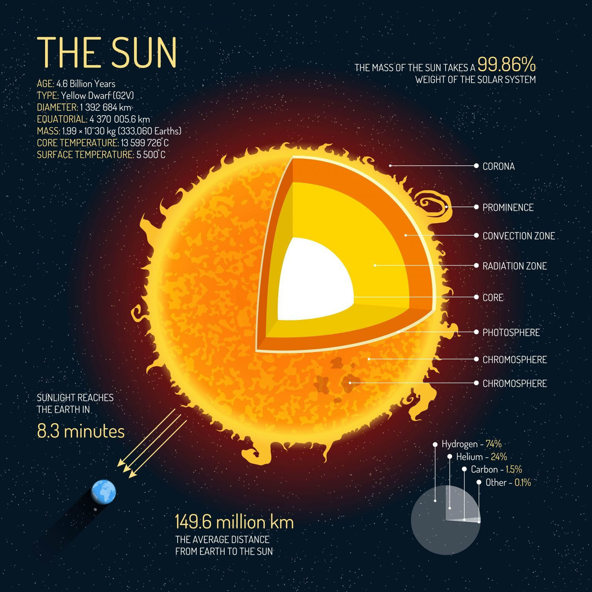
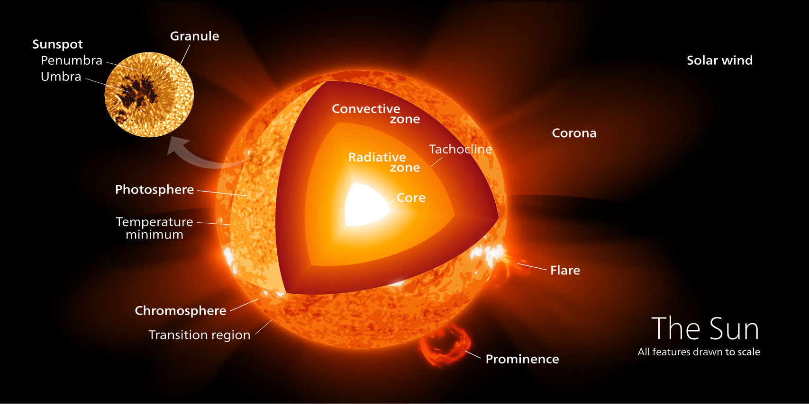
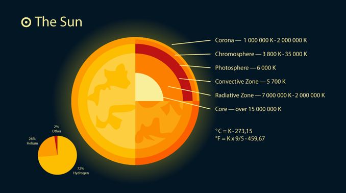

Günəş Haqqında Məlumat
The sun heats the solar system and is at the center of our solar system. It’s so massive that it holds 99.9% of the total mass of the solar system. The sun is mostly hydrogen and helium. By fusing hydrogen with helium, the sun releases vast amounts of energy toward Earth. It takes sunlight 8 minutes and 20 seconds to reach us. This is the solar radiation that heats our planet. Surface Temperature: 5,500°C Distance to Earth: 149,600,000 km Mass: 199 x 1030 kg (333,060 Earths) Diameter: 1,392,684 km Sun Layers The sun’s layers include the corona, chromosphere, photosphere, convection zone, radiative zone, and core. It’s also composed of 72% hydrogen, 26% helium, and 2% other gases. Corona – 1,000,000 K to 2,000,000 K Chromosphere – 3,800 K to 35,000 K Photosphere – 6,000 K Convection Zone – 5,700 K Radiative Zone – 7,000,000 K to 2,000,000 K Core – Over 15,000,000 K Our sun is a main sequence star with a life expectancy of about 10 billion years. Currently, we’re into year 5 billion years of our Sun’s lifespan.
Şəkil



